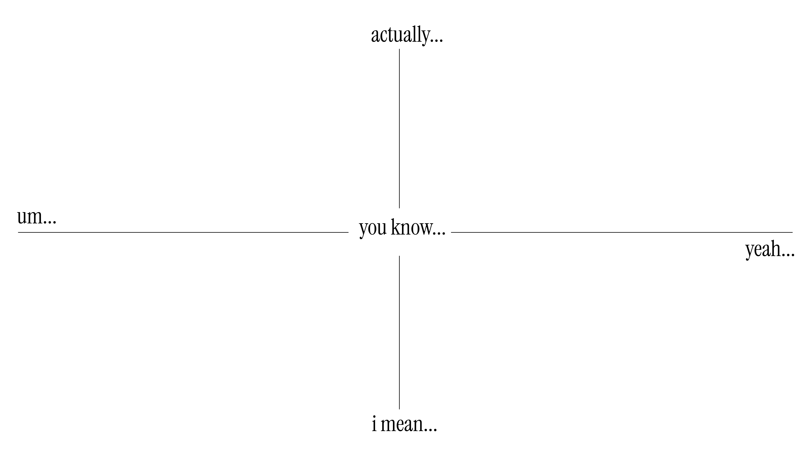

Average conversation starters
aboutWhat are the most commonly used phrases that Americans use when starting their sentences? This website aims to identify five common sentence-starters that we use informally in our daily lives, examining our comprehension skills and limited vocabulary usage. Click each square to see the real-life scenarios of a conversation. Then, drag each square to the nearest sentence starter that you would most likely use to respond to the situation.
